Tutorial: from a regulatory graph to dynamical analysis with GINsim 3.1¶
This tutorial walks you through the main steps of a logical modelling project with GINsim 3.1: defining a regulatory graph and its logical rules, checking them, computing attractors, exploring the dynamics, estimating attractor reachability and analysing regulatory circuits.
It has two parts:
- Part I builds a small model from scratch, the p53–Mdm2 network (four components, two of them multilevel), following the protocol of Naldi et al. 1, so that you can practise the editing tools and the main analyses on something small whose behaviour you can fully predict.
- Part II applies the analysis tools to a published model, the multilevel model of the mammalian cell cycle by Traynard et al. 2, which is the case study of the GINsim 3.1 article. The screenshots of Part II are the figures of that article.
Before you start
- Software: GINsim 3.1, which needs a Java Virtual Machine (version 11 or later). See the installation page.
- File for Part I:
tutorial_p53Mdm2.zginml, the complete p53–Mdm2 model (to check your work, or to start from). - Files for Part II: the multilevel cell cycle model, available from the
model repository (file
Traynard_MultiLevel_MamCC_Apr2016.zginml). - Reference documentation: this tutorial is task-oriented. The full description of every functionality is in the Documentation.
Getting started¶
Launching GINsim¶
Start GINsim from your file browser (double-click on the JAR file) or from a terminal:
java -jar GINsim-<version>.jar
GINsim opens the Welcome dialog, from which you can create a New model, Open a saved model, or Import a model from another format. The recently used files are listed below.
The Welcome dialog
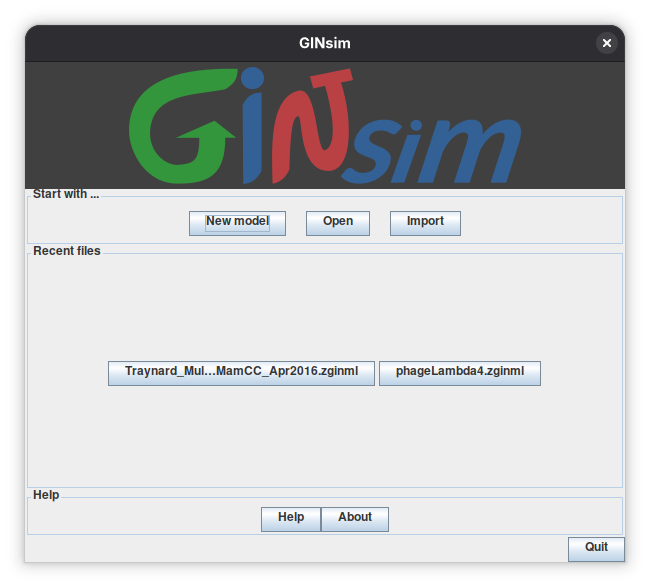
Closing this dialog stops GINsim.
Opening a file from the command line
A model file (or a request for a new model) can be given as an argument on the command line, in which case the Welcome dialog is skipped. For example, from the directory containing both files:
bash
java -jar GINsim-3.1-with-deps-java11.jar Traynard_MultiLevel_MamCC_Apr2016.zginml
Use the JAR matching your Java version and replace the model filename with the path to the file you want to open. See the run options on the installation page.
The main window¶
Every model opens in a main window. From top to bottom you find the menus
(GINsim, File, View, Graph, Tools), the editing toolbar, the graph canvas,
and the bottom area with the three tabs (whose content depends on the selected element)
Modelling Attributes, Style, and Annotation.
The main window of a new model
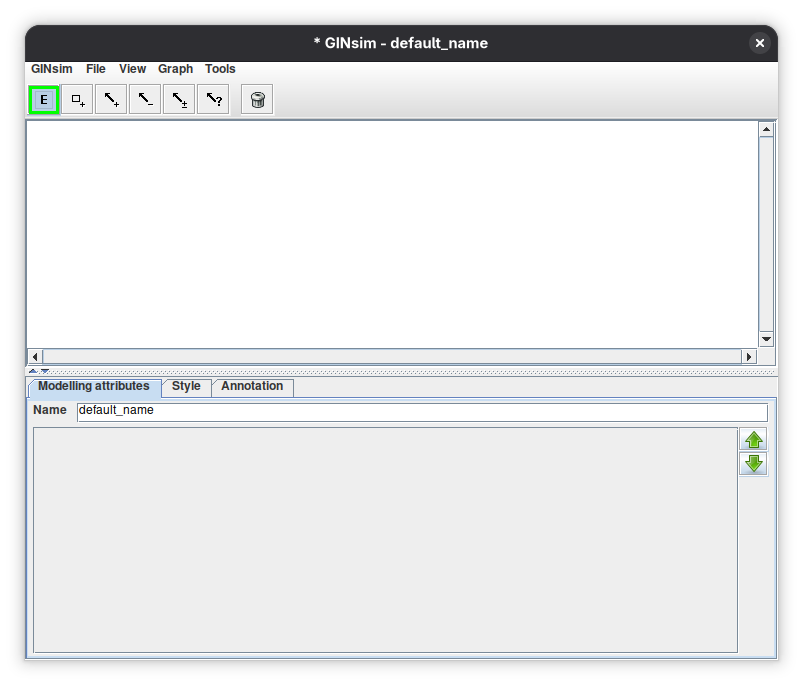
The functionalities used in this tutorial are located as follows.
| Menu | Entries used in this tutorial |
|---|---|
Tools |
Run simulation, Attractor reachability, Compute stable states, Trap-spaces identification, Analyse circuits, Interactions functionality, Reduce model, Booleanize model, Reverse model |
Graph |
Colour LRG, Colour SCC, Construct SCC Graph, Find path |
File |
New model, Open, Import, Save, Save as…, Export, Close |
View |
Layout, zoom commands |
The Tools and Graph menus
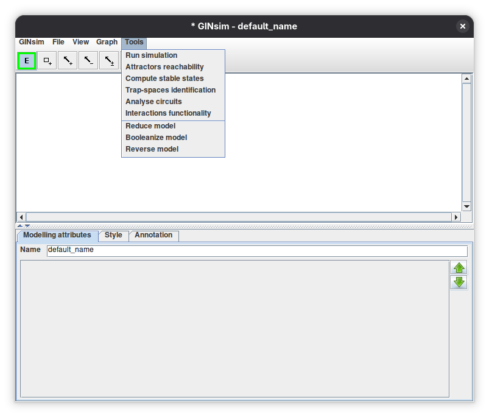
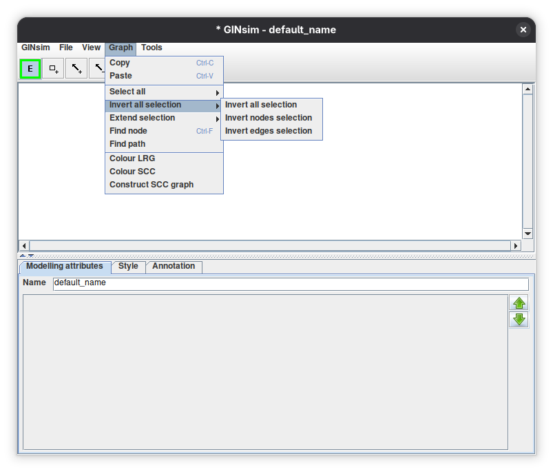
Part I: building a model from scratch, the p53–Mdm2 network¶
In this first part we build, step by step, a small logical model of the p53–Mdm2 network and analyse it with the main GINsim tools. We follow the protocol of Naldi et al. 1, which uses the same example, and which you can read for more biological and methodological background.
The biological system¶
The transcription factor p53 controls cell proliferation and the response to DNA damage. Its level is tightly regulated by the ubiquitin ligase Mdm2: nuclear Mdm2 accelerates the degradation of p53 and blocks its transcriptional activity. In turn, p53 activates the transcription of Mdm2 and, by inhibiting the translocation of Mdm2 from the cytoplasm to the nucleus, decreases the level of nuclear Mdm2. DNA damage promotes the degradation of Mdm2, so that p53 can increase and trigger DNA repair; high levels of p53 in turn favour the repair of the damage.
The p53–Mdm2 network
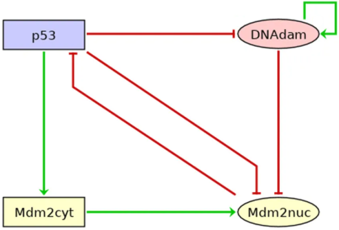
The model¶
The model has four components, whose maximal levels are given below. Please create them in this order (p53, Mdm2cyt, Mdm2nuc, DNAdam), which makes your results easier to compare with the figures.
| Component | Meaning | Levels |
|---|---|---|
p53 |
the protein p53 | 0, 1, 2 |
Mdm2cyt |
Mdm2 in the cytoplasm | 0, 1, 2 |
Mdm2nuc |
Mdm2 in the nucleus | 0, 1 |
DNAdam |
DNA damage | 0, 1 |
The regulatory interactions are listed below. When a source acts on a target at several levels (here Mdm2cyt on Mdm2nuc), the interaction has several thresholds, each of them with its own sign. An interaction is active when the level of its source is at least its threshold, and below the threshold of the next interaction of the same source.
| Source | Target | Threshold | Sign |
|---|---|---|---|
| p53 | Mdm2nuc | 1 | − |
| p53 | Mdm2cyt | 2 | + |
| p53 | DNAdam | 2 | − |
| Mdm2cyt | Mdm2nuc | 1 | + |
| Mdm2cyt | Mdm2nuc | 2 | + |
| Mdm2nuc | p53 | 1 | − |
| DNAdam | DNAdam | 1 | + |
| DNAdam | Mdm2nuc | 1 | − |
Finally, the logical rules give the conditions under which each component is called to reach a target level.
p53, target level 2:!Mdm2nucMdm2cyt, target level 2:p53Mdm2cyt, target level 1:!p53Mdm2nuc, target level 1:Mdm2cyt:2 | (Mdm2cyt:1 & !p53 & !DNAdam)DNAdam, target level 1:DNAdam & !p53
Rules combine regulators with ! (NOT), & (AND), | (OR) and parentheses. A regulator name refers to
an interaction, and is true when the level of the regulator is at least the threshold of this interaction. When there are
several thresholds, Mdm2cyt:2 explicitly designates the one at level 2. Hence, in the rule of Mdm2cyt, p53 means
"p53 at level 2" (threshold 2 of the interaction p53 → Mdm2cyt), and !p53 means "p53 below level 2", whereas in the rule of
Mdm2nuc, !p53 means "p53 absent" (threshold 1).
In words:
- p53 is called to its highest level when there is no nuclear Mdm2, and to 0 otherwise;
- Mdm2cyt has a basal level of 1, and is called to level 2 when p53 is at level 2;
- Mdm2nuc is active when Mdm2cyt is at level 2, or when Mdm2cyt is at least at level 1 in the absence of p53 and of DNA damage;
- DNAdam maintains itself, unless p53 reaches level 2 (DNA repair).
A level not covered by any rule is called to 0.
Create the components¶
- In the Welcome dialog, click New model.
- Use the component insertion tool of the toolbar (a square with a plus sign). To create several nodes in a row, double-click the tool to lock the mode, then click four times on the canvas. Click the E button (default mode) to stop adding nodes.
- Select each node and use the bottom panel (Modelling Attributes tab) to set its
Idand its maximal levelMax(2 for p53 and Mdm2cyt, 1 for the others), as in the table above. Leave theInputbox unticked: this model has no input. - Check the order of the components: with nothing selected, the Modelling Attributes tab lists the components. Use the green arrows to obtain the order: p53, Mdm2cyt, Mdm2nuc, DNAdam.
Defining the components
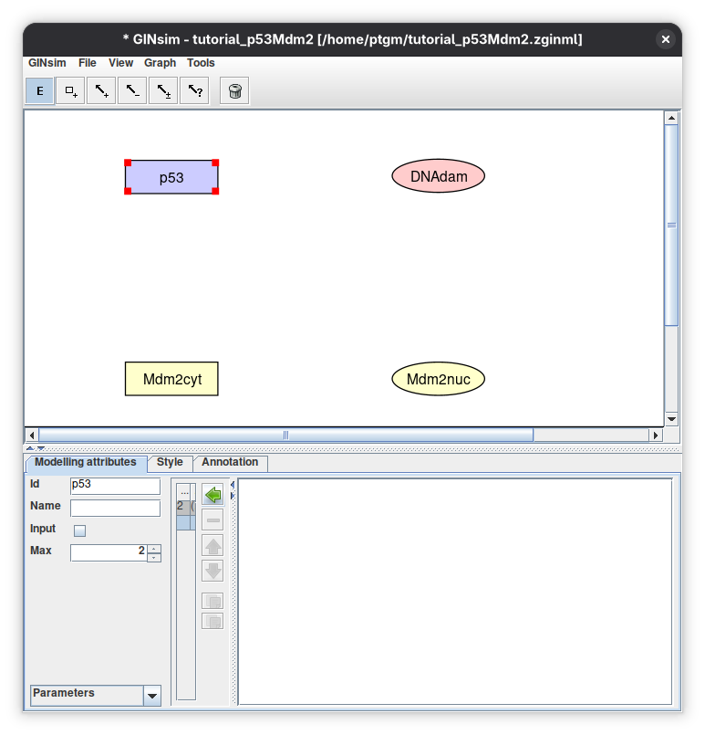
The four nodes created; here p53 is selected, and the bottom panel shows its identifier, its maximal level (2), and its annotations. The Style tab lets you change colours and shapes.
Editing tools
Pass the mouse over a tool to display its function. Clicking once on a tool selects it for a single use; clicking twice locks it.
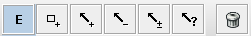
Add the interactions¶
Select the type of interaction in the toolbar (positive, negative, dual or unknown), click on the source node and drag to the target node. A node can be its own target (DNAdam). For each interaction, the sign is only a visual hint: the effect of an interaction is defined by the logical rules.
For the arc from Mdm2cyt to Mdm2nuc, there are two thresholds: draw one arc, select it (default mode E), and, in the bottom panel, click the + button to add a second interaction with threshold 2 (both are positive). Likewise, select the arcs from p53 to Mdm2cyt and from p53 to DNAdam and set their threshold to 2.
Defining the interactions
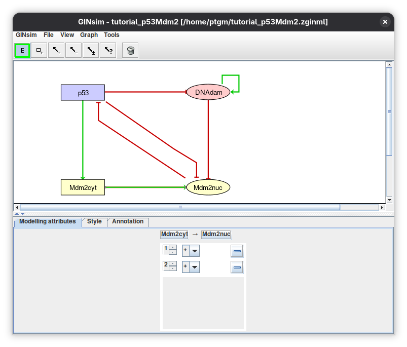
The regulatory graph and, in the bottom panel, the two interactions (thresholds 1 and 2) of the arc from Mdm2cyt to Mdm2nuc.
Define the logical rules¶
- Select a node (for instance DNAdam) and choose Formulae in the drop-down list at the bottom left of the Modelling Attributes tab.
- Click the little arrow in the main bottom panel to expand the tree, and add a function for the target level (1 by default; change it for the multilevel nodes).
- Click the E button to start editing (the line is highlighted), type the formula, and press Enter to validate it.
- Repeat for the other components and target levels of the table of rules.
Several rows can be given for the same target level; they are combined with OR. The literals must exactly match the identifiers of the regulators of the selected node. A component with no rule for a level stays at the value 0 for this level.
Defining a rule
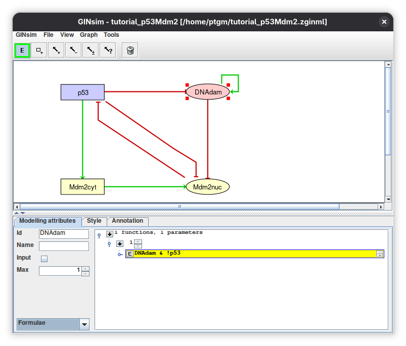
The rule DNAdam & !p53 for the target level 1 of DNAdam: DNAdam is maintained at level 1 if already present, but only in the absence of p53.
Annotate and save the model¶
Annotations (free text and links to databases such as pubmed:19426782) can be attached to the model, to each component and to each interaction.
Select an element and use the annotation panel (select the Annotation tab below).
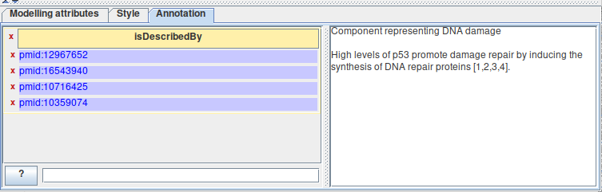
Use File → Save as… to save your model in a .zginml archive: this keeps, together with the model, its perturbations, initial states and
simulation settings.
Save regularly
There is no undo functionality.
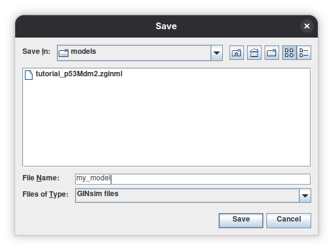
Check the consistency of the model¶
Before computing anything, check that the signs of the interactions you drew agree with what your rules really do. Open Tools → Interactions functionality and click Run: GINsim recomputes, from the logical rules, the effect of each interaction in each regulatory context, and compares it with the declared sign. For the model above, all interactions are consistent (they kept the original color).
Select a perturbation (optional), click Run, Save a report, and tick Change/Restore LRG edge colours to display the result on the graph.
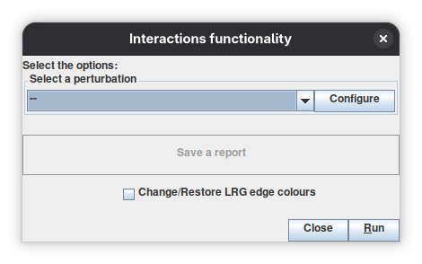
Exercise: find the typos
Introduce each of the following errors, run the tool again, and undo the change.
- In the rule of
Mdm2nuc, delete& !p53. The interaction p53 → Mdm2nuc, declared as an inhibition, is now reported as non-functional: p53 no longer has any effect on Mdm2nuc. - In the rule of
p53, replace!Mdm2nucbyMdm2nuc. The interaction Mdm2nuc → p53, declared as an inhibition, is now reported as a positive interaction.
In both cases, the other interactions are not flagged.
Inconsistencies do not prevent simulation
GINsim does not forbid inconsistent models: they simulate normally. The tool is there to help you find mistakes. Remember also that a wrong threshold on a multilevel source is not an inconsistency of sign, so it may not be detected by this tool: check the thresholds of the interactions leaving multilevel components first when a result looks wrong.
Stable states¶
A stable state is a state in which every component is already at its target level. Open Tools → Compute stable states
and click Run. GINsim searches all the stable states with an efficient algorithm that does not build the state transition graph.
You should find a unique stable state: p53 = 0, Mdm2cyt = 1, Mdm2nuc = 1, DNAdam = 0 (written 0110 below, in the order of the components),
corresponding to the rest state of the cell: no p53, medium levels of cytoplasmic and nuclear Mdm2, no DNA damage.
If you obtain another stable state, or none, check carefully the maximal level of each node, the threshold of each interaction and each rule.
Stable states
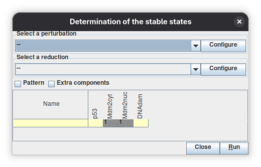
Yellow and grey cells denote the levels 0 and 1.
Asynchronous dynamics¶
The state of the model is the vector of the levels of its components. In a given state, a component whose level differs from its target level is called to update, by one unit toward its target. Under the asynchronous updating, each call gives a different transition: a state with k calls can originate k successors.
Open Tools → Run simulation. The default settings are those we want: State Transition Graph, Asynchronous updating, no perturbation, and no selected initial state, which means that all the (3 × 3 × 2 × 2) 36 states are considered.
Configuration of the simulation
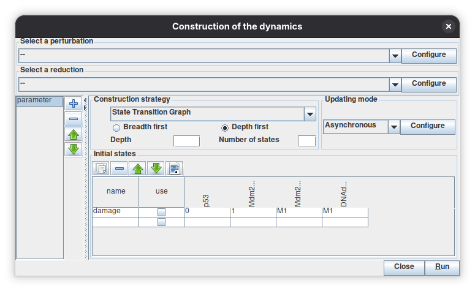
The panel shows, from top to bottom, the perturbation and the reduction (none here), the Construction strategy
(state transition graph), the Updating mode (asynchronous) and the table of Initial States. One initial state damage
(0111: p53 at 0, the others at their maximum, written M1 for the nodes with a maximal level 1) has been defined but is not selected.
The + button on the left stores several parameter settings.
Click Run, then display the graph in the new window. The stable state 0110 is at the bottom, and the states without incoming arcs are at the top. Select the
state 0200 (high Mdm2cyt, the three others at 0): its three successors are listed in the bottom panel, 1200 (p53 increases),
0100 (Mdm2cyt decreases) and 0210 (Mdm2nuc increases). Click the arrows in the bottom panel to follow a path.
The asynchronous state transition graph
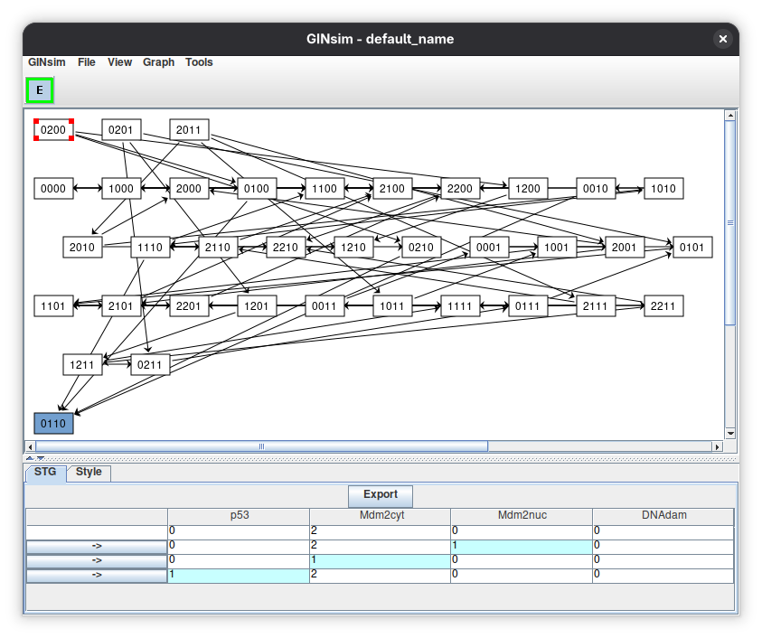
The unique stable state 0110 is at the bottom. The selected state 0200 is shown in the STG tab with its successors.
State space explosion
The number of states doubles with each additional Boolean node. Building the complete state transition graph is discouraged for more than about 15 nodes; for larger models, use the other tools and/or compressed graphs.
Synchronous dynamics¶
Under the synchronous updating, all the components called to update change their levels simultaneously, in a single transition. Run the simulation again, selecting Synchronous in the Updating mode menu.
The synchronous state transition graph
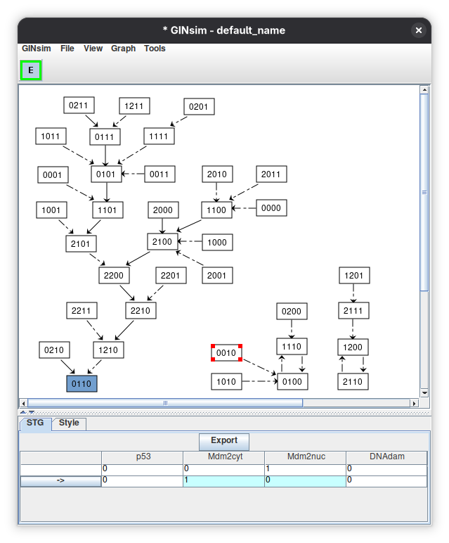
The layout was manually rearranged.
You should obtain three disconnected graphs: the stable state 0110, which can be reached from 26 other states, and two cyclic attractors of two states
each, which did not exist under the asynchronous updating: 0100↔1110 (reached from 3 other states) and 1200↔2110 (reached from 2 other states).
This difference shows that the choice of the updating scheme matters.
Compress the graph: the hierarchical transition graph¶
Go back and choose Hierarchical Transition Graph in the Construction strategy menu before running the simulation, selecting Asynchronous in the Updating mode menu. The HTG has 6 nodes instead of 36: groups of states are merged, while the attractors and the main dynamical properties are preserved.
The hierarchical transition graph
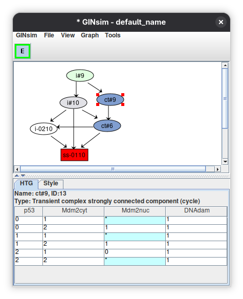
The stable state ss-0110 is at the bottom (red). The two blue nodes, ct#9 and ct#6, are cyclic transient components.
Click the node ct#9: the bottom panel lists the 9 states of this component, written as patterns where * stands for all the values of a component.
In all of them DNAdam = 1, while p53 oscillates between 0 and 2, Mdm2cyt between 1 and 2 and Mdm2nuc between 0 and 1:
this is the large oscillations of p53 in the presence of DNA damage. The node ct#6 (6 states, DNAdam = 0, p53 and Mdm2cyt oscillating between 1 and 2)
corresponds to smaller transient oscillations of p53 after DNA repair. The other nodes (i#9, i#10, i-0210) are irreversible transient groups of states.
So, starting with DNA damage, the system first goes through large p53 oscillations, then the damage is repaired along with smaller oscillations, and finally the cell returns to its rest state.
Perturbations¶
Gene knock-out is modelled by fixing the level of a component to 0, and ectopic expression by fixing it to its highest level
(or to a range of levels for a multilevel component). Also, perturbations can be combined. Click the Configure button of any Select a perturbation panel
(simulation, stable states, circuits…) to open the perturbation editor, select the component DNAdam, the type RANGE, and 1 – Ectopic activity, then click Create:
the perturbation DNAdam E1 is now defined, and can be selected in the tools.
Defining a perturbation
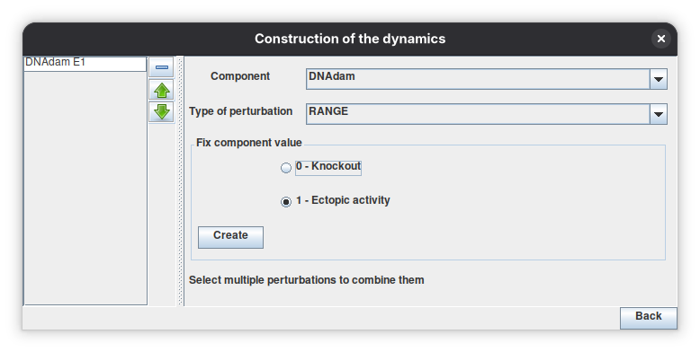
Ectopic expression of DNAdam: its level is blocked to 1.
Select DNAdam E1 and compute the stable states again: there is none, the rest state 0110 is no longer a stable state.
Now run the simulation again with hierarchical transition graph: the attractor corresponds to large oscillations of p53, together with oscillations of the nuclear and cytoplasmic forms of Mdm2, in the presence of DNA damage.
It is made of the 9 states of the component ct#9.
Trap-spaces¶
The Trap-spaces identification tool (Tools menu) gives a compact description of the attractors. Without perturbation, it returns a single trap-space, the stable state 0110.
With the perturbation DNAdam E1, it returns the sub-space where DNAdam = 1 and Mdm2cyt ≥ 1, the other components being free.
Because trap-spaces approximate the attractors, this sub-space contains the 9 states of the oscillation.
This tool is specific to Boolean variables, so the multilevel components are split into Boolean variables (p53_b1, p53_b2, Mdm2cyt_b1, Mdm2cyt_b2) in the result table.
Regulatory circuits¶
Regulatory circuits are responsible for the emergence of dynamical properties such as multistability (positive circuits) or sustained oscillations (negative circuits) 5. But a circuit may be blocked by the other regulators of its components, rendering it not functional. Open Tools → Analyse circuits and click Search Circuits, the regulatory graph contains four circuits. Then click Functionality Analysis: three of them are functional (one negative and two positive). Select a circuit to display its sign and its functionality context, i.e. the conditions on the other regulators under which it operates 6.
Circuit analysis
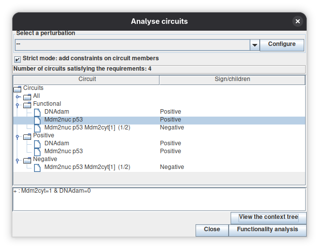
Among the four circuits, the negative circuit (p53, Mdm2cyt, Mdm2nuc), the positive self-loop of DNAdam and the positive circuit between p53 and Mdm2nuc are functional. The selected positive circuit, the cross-inhibition between p53 and Mdm2nuc, is functional when Mdm2cyt = 1 and DNAdam = 0.
Indeed, the inhibition of Mdm2nuc by p53 has no effect when there is DNA damage, when Mdm2cyt is at its highest level (Mdm2nuc is then active whatever the value of p53), or
when Mdm2cyt is absent. Circuits that differ only by the threshold of one interaction (here, level 1 or 2 of Mdm2cyt acting on Mdm2nuc) are grouped, and indicated with a tag such as [1] or (1/2).
Model reduction¶
When models grow, their state transition graph quickly becomes too large. A reduction hides some components and recomputes the rules of their targets, so that their indirect effects are kept, which preserves the stable states and the more complex attractors 7. Open Tools → Reduce model, click + to define a reduction, select the node Mdm2cyt, and click Run.
Reduction of Mdm2cyt
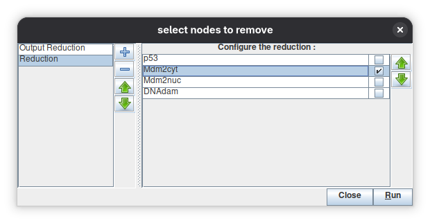
Only Mdm2cyt is selected for reduction. A reduction can also be defined here and then selected and applied directly by the other tools (Select a reduction panels).
The reduced model has three components. Mdm2nuc is now the target of a dual interaction from p53, which captures the indirect effect of p53 through Mdm2cyt: Mdm2nuc is called to 1 if p53 is at level 2, or if p53 is absent and there is no DNA damage, and to 0 otherwise. Select this reduction in the simulation dialog and run the asynchronous simulation: the graph has 12 states instead of 36, the rest state is kept, and the two kinds of p53 oscillations (large with damage, smaller after repair) are still there.
What you have learnt¶
You defined a multilevel logical model, checked it, computed its stable states, explored its asynchronous and synchronous dynamics and compressed it, applied a perturbation, analysed its regulatory circuits and reduced it. Part II applies the same tools, and others (colouring a state on the graph, estimating the reachability of the attractors), to a larger model.
Part II: analysing the mammalian cell cycle model¶
The model of Traynard et al. 2 describes the core engine of the mammalian cell cycle with eleven components, among which the cyclins A, B, D and E, and the inhibitors Rb, p27 and the APC/C co-activators Cdh1 and Cdc20. CycD is an input (the growth factor signal); Rb and p27 are ternary components. It extends the model of Fauré et al. 3.
Go to the models/2016-mammal-cell-cycle/ in the model repository and download the Traynard_MultiLevel_MamCC_Apr2016.zginml model file.
Then in GINsim, Open and select the downloaded file
(or click it in the Recent files of the Welcome dialog).
Here, we follow the analysis described in the GINsim 3.1 paper 4.
Explore the model¶
The regulatory graph appears in the main window. Green arcs are activations and red arcs inhibitions; rectangles are the multilevel components (Rb and p27), ellipses the Boolean ones, and the input CycD is shown in blue. The bottom area has three tabs: Modelling attributes, Annotations and Style. With nothing selected, the Annotations tab displays the annotation of the model itself.
The regulatory graph of the cell cycle model
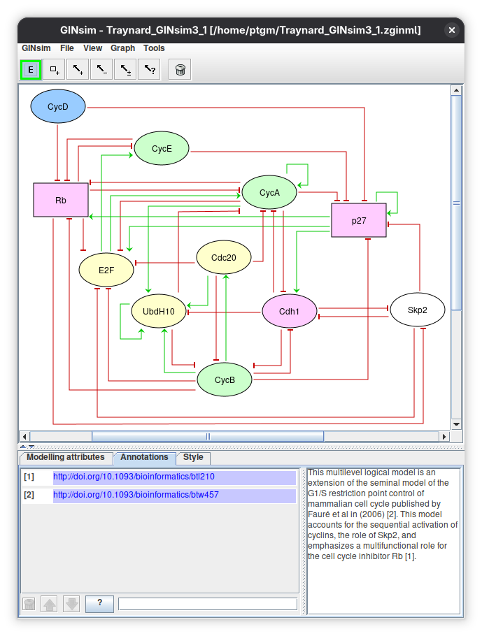
The Annotations tab of the model: a numbered list of two links, to the publications the model derives from, and a free text that cites them.
Select the component p27: the Modelling attributes tab shows its identifier, its maximal level (2) and, in the Formulae view, its logical functions, one per target value.
The logical rules of p27
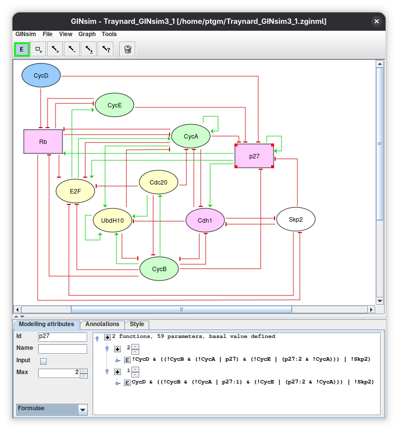
Two non-overlapping Boolean functions define the target values of the ternary component p27: the first enables the value 2 and the second the value 1.
The complete rules are listed in a table in the GINsim 3.1 article 4. Use View → Layout if you want to rearrange the graph, and Graph → Find path or Graph → Highlight local graph to explore the neighbourhood of a component.
Check the interaction signs¶
As in Part I, run Tools → Compute interaction functionality. For this model, the 40 interactions of the graph are consistent with the logical rules: nothing is flagged. The two ternary components deserve a closer look at their rules: the five regulators CycA, CycB, CycD, CycE and Skp2 inhibit p27, which activates itself at both of its levels, while CycA, CycB, CycD and CycE inhibit Rb, which is activated by p27 at its first level only (going from level 1 to level 2 of p27 changes nothing for Rb).
Exercises
Introduce one of the following errors, run the tool again, and undo the change (do not save the modified model).
- In the rule of
CycB, replace!Cdh1byCdh1. Only the interactionCdh1 → CycBis flagged: declared as an inhibition, it is now reported as a positive interaction. - In the rule of
CycE, delete& !Rb. Only the interactionRb → CycEis flagged, as non-functional.
A mistake in a multilevel rule can have a larger footprint: if, in the rule of p27 for the target value 2, you replace !CycD by CycD, the two rules of p27
overlap, and all the interactions targeting p27 are reported as non-functional.
Compute the attractors¶
Open Tools → Trap-spaces identification. Trap-spaces are sub-spaces of the state space that the dynamics cannot leave; the minimal ones contain the stable states and give an approximation of the other attractors (see the documentation and 8). The dialog proposes, as most tools, a perturbation, a model reduction and an input restriction. Click Run with the default settings.
The result table contains one line per trap-space; the columns are the Boolean variables of the model
(the ternary components Rb and p27 are split in two variables, _b1 and _b2, because the algorithm works on Boolean models: GINsim
converts the model transparently, see Booleanisation).
Empty yellow cells are variables fixed to 0, grey cells with a 1 are fixed to 1, and blue cells marked * are free.
Trap-spaces of the wild-type model
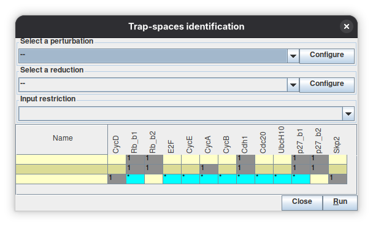
Three trap-spaces. The first two lines are stable states with all the cyclins inactive (CycD absent), which differ by the activity of CycA: the first is the quiescent state, the second is a spurious stable state pointing to incomplete knowledge on the regulation of cyclin A. In the third line, CycD and Skp2 are fixed to 1, and nine variables are free: this is a cyclic attractor, with CycD active and nine oscillating components.
Trap-spaces approximate the attractors
The cyclic trap-space of the third line has nine free variables, hence 2^9 = 512 states, whereas the cyclic attractor itself has 270 states (see the simulation below): a trap-space contains the attractor, but can be larger.
Now select the perturbation Rb KO, E2F E1 (Rb knocked out, E2F ectopically activated) and run again: the
quiescent state disappears and there remain two cyclic attractors, which differ by the value of CycD:
the model predicts cell cycle oscillations even without growth factors.
Trap-spaces with a double perturbation
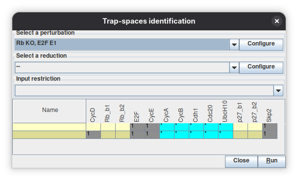
Display a state on the regulatory graph¶
Open Graph → Colour LRG. This tool has four tabs (By state, By stable states, By trap spaces and By max values) to colour the regulatory graph
depending on the state of each regulator. Select the perturbation p27 KO, Skp2 KO, click the By stable states tab,
then Get the stable states: the table shows the stable state returned (Rb = 2, Cdh1 = 1, all the other components inactive).
Select it and click Run. With Change/Restore LRG edge colours ticked, the active components are coloured in the graph and the interactions
they exert are highlighted: this is very handy to read a state on a large network. Untick the box and run again to restore the original colours.
Colour LRG
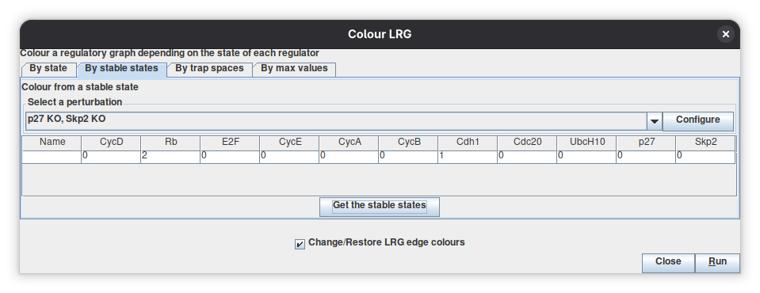
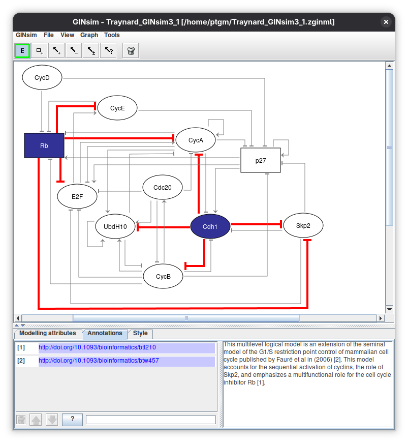
Active nodes (Rb and Cdh1) in dark blue and inactive nodes in white; the interactions exerted by the active nodes (all inhibitions) are in thick red, the others in grey.
Explore the dynamics: state transition graphs and their compressions¶
Open Tools → Run simulation. This dialog lets you choose
- a perturbation, a model reduction and an input restriction;
- the updating mode (here Asynchronous; other modes are synchronous, complete, or based on priority classes);
- the type of graph: the full State Transition Graph (STG), the Strongly Connected Components Graph (SCCG) or the Hierarchical Transition Graph (HTG), these last two being compressed during the computation, which allows to handle much larger models;
- the exploration strategy (depth-first or breadth-first) and limits on the depth or the number of visited states;
- the initial states and the values of the inputs. Rows can be added, removed and reordered with the buttons above each table. A row can fix some components and leave the others free.
The list on the left stores named configurations of the dialog (here, one per perturbation or updating mode), so that a simulation can be reproduced with a single click.
Configuration of a simulation
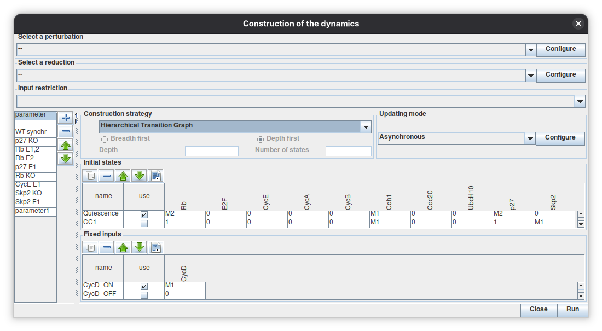
HTG, asynchronous updating, initial state Quiescence (ticked) combined with the input configuration CycD_ON (ticked; CycD = 1): a quiescent cell exposed to growth factors. The other initial state (CC1) and the input configuration CycD_OFF are not used.
If the model you opened has no CycD_ON / CycD_OFF
The configurations CycD_ON and CycD_OFF are rows of the Fixed inputs table: one row per configuration, with the value of the input CycD (1 for CycD_ON, 0 for CycD_OFF). Add rows with the buttons above the table, give them these names, and tick the one to be used.
Click Run. The result is a new window with the compressed graph. The upper node groups the 11 transient states
(including the initial one, i is for "irreversible"), which all lead to the lower node: a complex cyclic attractor of 270 states,
the proliferating cell cycle. Click a node: the bottom panel (HTG tab) gives its name, its type (here Terminal complex strongly connected component (cycle))
and the list of its states as a series of patterns, where * denotes a free component.
The functionalities of the contextual Tools menu (for instance Expand SCC&HTG nodes) expand a node into the corresponding STG, or compute the transitions between nodes.
The hierarchical transition graph
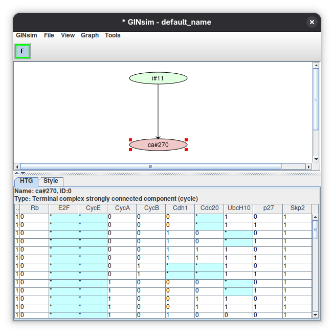
The node ca#270 is selected. The asterisk in the title of the window indicates a graph that has not been saved.
SCC graph and path tools
Compressed graphs can also be obtained for any existing graph with Graph → Construct SCC Graph (and Colour SCC colours the components without building it), and Graph → Find path, or the animation of a path in an STG, help to follow one specific trajectory.
Estimate which attractor is reached, and with which probability¶
State transition graphs of large models cannot always be built. The Assess attractor reachability tool (Tools menu) estimates by sampling asynchronous trajectories how likely each attractor is to be reached from a set of initial conditions, without building the whole graph. Two algorithms are proposed: plain Monte Carlo sampling and Avatar , which handles better the trajectories trapped in large cyclic attractors.
The window (titled Attractors reachability) is organised as follows:
- Simulation: the algorithm (here Avatar) and, for Avatar, its parameters: the number of runs (1000), the limits on the number of states expanded (
1E4) and rewired (1E3), and the rewiring mode (Exact exit probabilities). The Expert parameters are left to their default values; - Model modifications: the perturbation, the reduction and the input restriction (none here);
- Initial states and Fixed inputs: no initial state is ticked, so the internal components are left free, and both input configurations CycD_ON and CycD_OFF are ticked, which means that CycD is switched ON or OFF, its value being sampled for each run.
Configuration of the attractor reachability analysis
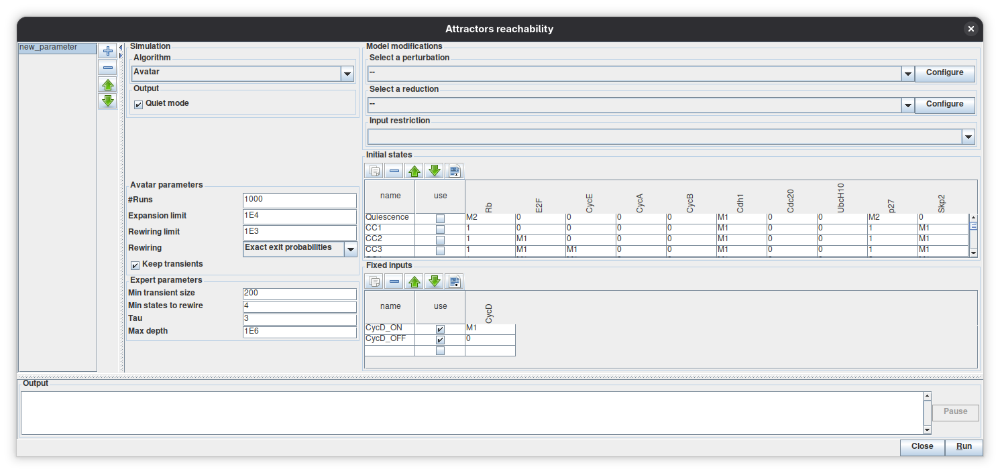
Click Run. When the computation ends, an output window reports the parameters, the initial conditions and the estimated probabilities. The results can be saved as HTML or CSV files, and the button Plot: convergence of probability estimates displays how the estimates stabilise during the runs.
Results
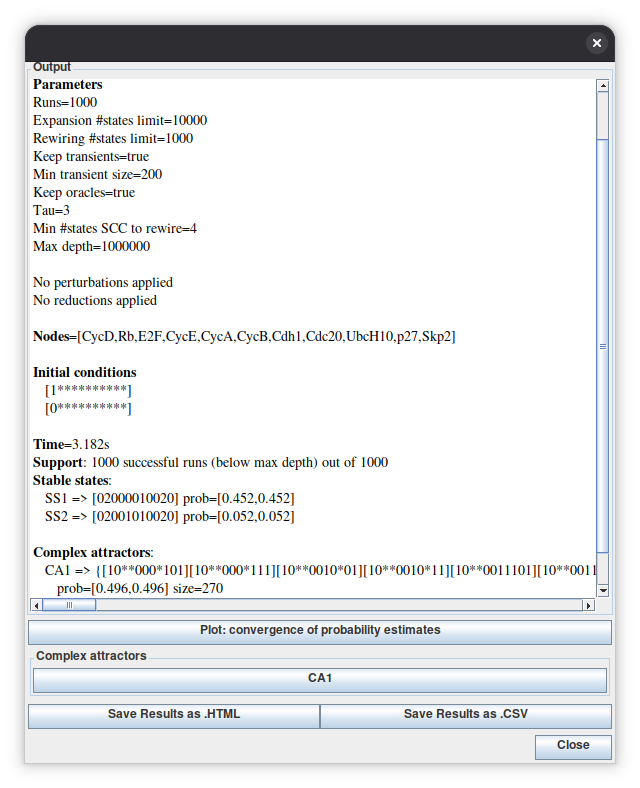
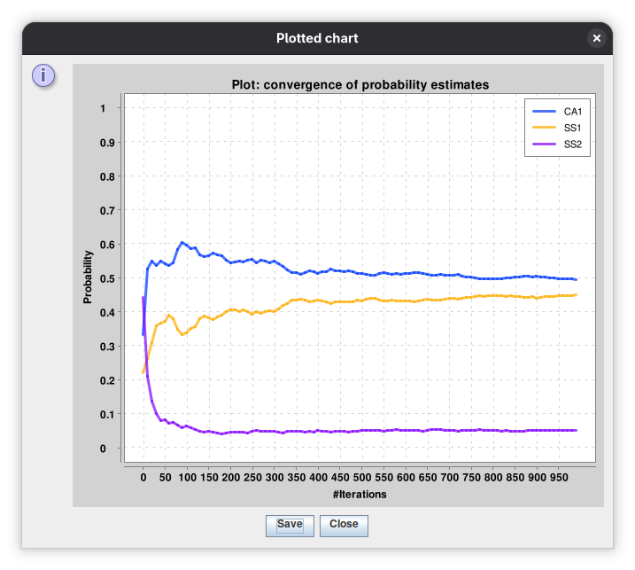
The initial conditions are [1**********] and [0**********]: CycD ON or OFF, all the other components free.
The two stable states SS1 and SS2 (the first two lines of the trap-space table) are reached with probabilities of about
0.45 and 0.05, and the cyclic attractor CA1 (270 states) with a probability of about 0.50.
The states are written as vectors, in the order given by Nodes (CycD, Rb, E2F, CycE, CycA, CycB, Cdh1, Cdc20, UbcH10, p27, Skp2). For instance, SS1 = [02000010020]
is the quiescent state (Rb = 2, Cdh1 = 1, p27 = 2, all the others at 0), and SS2 is the same state with CycA = 1. Each probability is reported as an interval (prob=[0.452,0.452]), reduced here to a single value.
Read the probabilities with the input in mind
CycD is an input: its value never changes during a run, and it decides which attractors can be reached (stable states for CycD = 0, the cyclic attractor for CycD = 1). The 0.50 / 0.50 split between the cyclic attractor (0.496) and the stable states (0.452 + 0.052) thus mostly reflects how CycD was sampled. The informative quantity is the probability conditional on the value of the input.
Exercise: condition on the input
Untick CycD_ON so that only CycD_OFF is used, and run Avatar again. All the trajectories now end in the two stable states. You should find that around 90 % reach the quiescent state (SS1) and around 10 % the spurious state with CycA active (SS2) (from the figure above: 0.452 / (0.452 + 0.052) ≈ 0.90). With only CycD_ON, all the trajectories reach the cyclic attractor.
Identify the regulatory circuits that matter¶
Regulatory circuits are closed paths of interactions; they are positive or negative depending on the parity of the number of inhibitions. Positive circuits are required for multistability, negative circuits for sustained oscillations 5. Large graphs have many circuits, but only some of them are functional, i.e. can operate in some context given the logical rules. GINsim computes, for each circuit, its functionality context 6.
Open Tools → Analyse circuits. The first dialog allows to restrict the search to circuits of a given length range (here from 1 to 11 components, the number of components of the model) or involving required or excluded components (all circuits are considered by default). Click Search Circuits.
Search of circuits
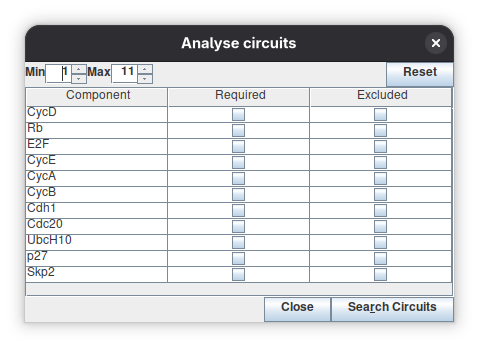
The next window lists the circuits found (264 for this model). Select a perturbation, for example CycD E1 (growth factor present), tick Strict mode if you want constraints on the members of the circuits, and click Functionality analysis. The circuits are then classified by sign and the functionality context of the selected circuit is displayed at the bottom (for instance, the negative circuit between CycB and Cdc20 is functional when Cdh1 = 0 and UbcH10 = 1).
Functional circuits
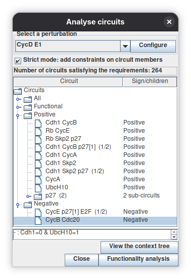
Two functional negative circuits (CycB–Cdc20, and p27–E2F–CycE) and ten functional positive circuits.
The circuit CycB Cdc20 is selected, and its context (- : Cdh1=0 & UbcH10=1) is displayed below the list.
Entries such as Cdh1 CycB p27[1] (1/2) and the folder p27 (2) (2 sub-circuits) group circuits that differ only by the threshold of one interaction.
To emphasise circuits in the regulatory graph, as in the figure below, define edge styles in the Style tab (Edges): here Thick Negative (red, #c80000, line width 4)
and Thick Positive (green, #00c800, line width 4), and apply them to the arcs of the circuits.
Circuits on the regulatory graph
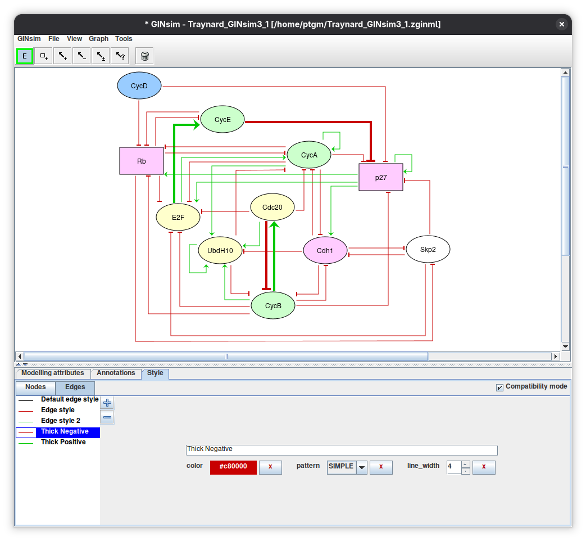
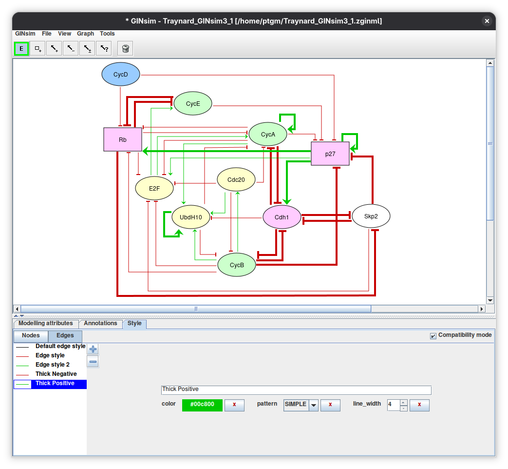
Functional negative circuits (left, thick arcs) are those that can generate the oscillations of the cell cycle; functional positive circuits (right) presumably support irreversible decisions along the cycle.
Other tools¶
These tools are not needed for the examples above, but you will often use them on larger models.
Booleanisation (Tools → Booleanize model). Converts a multilevel model into an equivalent Boolean model, by mapping a component of maximal level m onto m Boolean variables. It is applied implicitly when a Boolean-only tool, such as the trap-space identification, or a Boolean-only export format is used on a multilevel model.
Model reversal (Tools → Compute reversed model). Builds a model whose asynchronous successors are the predecessors of the original model, which allows to compute the states leading to an attractor by exploring its forward dynamics in the reversed model.
Strongly connected components (Graph → Construct SCC Graph, Colour SCC, and Tools → Expand SCC&HTG nodes). Compute or just colour the strongly connected components of a graph (regulatory graph or state transition graph); the SCC graph is acyclic and gives a compact view of its organisation. Expand SCC&HTG nodes recovers the original graph for a selection of nodes of an SCC graph or of an HTG, by launching a new simulation limited to the corresponding sub-space.
Going further¶
- Exports. Export your model to other tools from File → Export (see the table of formats in the Documentation).
- Scripts and notebooks. The core algorithms are implemented in the bioLQM library and are available, with many other tools, in the CoLoMoTo Interactive Notebook environment, which lets you chain GINsim analyses with other tools in reproducible Jupyter notebooks. A short example is given below.
- More models. The model repository gathers published logical models, each with its model file(s), ready to open in GINsim.
- Questions and bugs. See the contact page and the GitHub repository.
A scripting example¶
The following Python commands reproduce some results of Part I (stable state, then ectopic expression of DNAdam):
import ginsim, biolqm
lrg = ginsim.load("tutorial_p53Mdm2.zginml") # the model of Part I
lqm = ginsim.to_biolqm(lrg)
biolqm.fixpoints(lqm)
# [{'p53': 0, 'Mdm2cyt': 1, 'Mdm2nuc': 1, 'DNAdam': 0}] (the rest state)
pert = biolqm.perturbation(lqm, "DNAdam%1") # ectopic expression of DNAdam
biolqm.fixpoints(pert)
# [] (no stable state)
biolqm.trapspace(pert, "terminal bdd")
# a single trap-space: DNAdam = 1, Mdm2cyt >= 1, the other components free
Troubleshooting¶
If you obtain unexpected dynamical results (stable states or simulations), check successively:
- the structure of the regulatory graph (missing or wrong interactions);
- the maximal levels of all components;
- the thresholds of the interactions leaving multilevel components;
- the logical rules, and the signs of the interactions with Compute interaction functionality.
| Symptom | Likely cause |
|---|---|
| The Input box of a component is disabled | The component has incoming interactions or rules: remove them first |
| A rule is highlighted | The rule uses interactions that are not defined for this regulator or that have disjoint ranges |
| A multilevel regulator seems to be ignored | The interaction threshold does not match the level used in the rule (X vs X:2) |
| The trap-space table has more columns than components | Multilevel components are split into Boolean variables (_b1, _b2) |
| Probabilities of reachability depend on the input | The input is sampled: condition on the value of the input |
How to cite¶
If you use GINsim 3.1, please cite the article indicated in the how to cite page.
-
The p53–Mdm2 example of Part I is adapted from Naldi et al. 1.
-
The mammalian cell cycle core engine of Part II is adapted from Traynard et al. 2.
References¶
-
Naldi A, Hernandez C, Abou-Jaoudé W, Monteiro PT, Chaouiya C, Thieffry D. Logical modeling and analysis of cellular regulatory networks with GINsim 3.0. Front. Physiol. 9:646 (2018). doi:10.3389/fphys.2018.00646 ↩↩↩
-
Traynard P, Fauré A, Fages F, Thieffry D. Logical model specification aided by model-checking techniques: application to the mammalian cell cycle regulation. Bioinformatics 32(17):i772–i780 (2016). doi:10.1093/bioinformatics/btw457 ↩↩↩
-
Fauré A, Naldi A, Chaouiya C, Thieffry D. Dynamical analysis of a generic Boolean model for the control of the mammalian cell cycle. Bioinformatics 22(14):e124–e131 (2006). doi:10.1093/bioinformatics/btl210 ↩
-
Tichit L, Benielli D, Chabrol O, Thieffry D, Chaouiya C, Monteiro PT. GINsim 3.1: Qualitative modelling and dynamical analysis of logical regulatory networks. in preparation ↩↩
-
D. Thieffry. Dynamical roles of biological regulatory circuits. Briefings in Bioinformatics, 8(4):220–225, March 2007. doi:10.1093/bib/bbm028. ↩↩
-
Aurélien Naldi, Denis Thieffry, and Claudine Chaouiya. Decision Diagrams for the Representation and Analysis of Logical Models of Genetic Networks, pages 233–247. Springer Berlin Heidelberg, 2007. doi:10.1007/978-3-540-75140-3_16. ↩↩
-
Aurélien Naldi, Elisabeth Remy, Denis Thieffry, and Claudine Chaouiya. Dynamically consistent reduction of logical regulatory graphs. Theoretical Computer Science, 412(21):2207–2218, May 2011. doi:10.1016/j.tcs.2010.10.021. ↩
-
Hannes Klarner, Alexander Bockmayr, and Heike Siebert. Computing Symbolic Steady States of Boolean Networks, pages 561–570. Springer International Publishing, 2014. URL: http://dx.doi.org/10.1007/978-3-319-11520-7_59, doi:10.1007/978-3-319-11520-7_59. ↩